This R tutorial describes how to create a box plot using R
software and ggplot2 package.
The function geom_boxplot() is used. A simplified format is :
geom_boxplot(outlier.colour="black", outlier.shape=16, outlier.size=2, notch=FALSE)
- outlier.colour, outlier.shape, outlier.size : The color,
the shape and the size for outlying points - notch : logical value. If TRUE, make a notched box plot. The
notch displays a confidence interval around the median which is
normally based on the median +/- 1.58*IQR/sqrt(n). Notches are used
to compare groups; if the notches of two boxes do not overlap, this
is a strong evidence that the medians differ.
Prepare the data
# Convert the variable dose from a numeric to a factor variable
ToothGrowth$dose <- as.factor(ToothGrowth$dose)
head(ToothGrowth)
## len supp dose
## 1 4.2 VC 0.5
## 2 11.5 VC 0.5
## 3 7.3 VC 0.5
## 4 5.8 VC 0.5
## 5 6.4 VC 0.5
## 6 10.0 VC 0.5
Basic box plots
library(ggplot2)
# Basic box plot
p <- ggplot(ToothGrowth, aes(x=dose, y=len)) +
geom_boxplot()
p
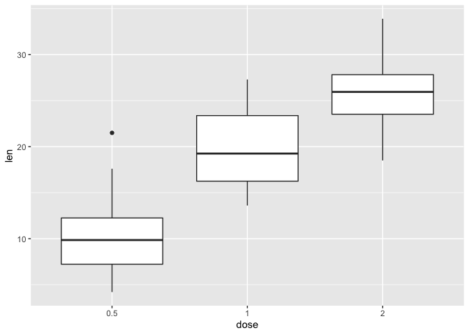
# Rotate the box plot
p + coord_flip()
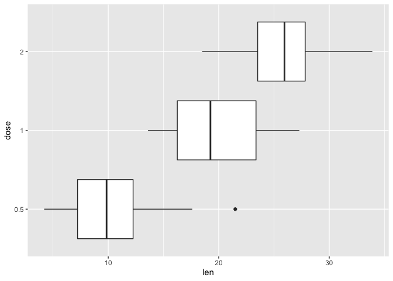
# Notched box plot
ggplot(ToothGrowth, aes(x=dose, y=len)) +
geom_boxplot(notch=TRUE)
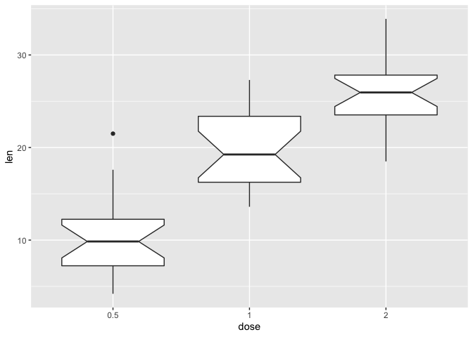
# Change outlier, color, shape and size
ggplot(ToothGrowth, aes(x=dose, y=len)) +
geom_boxplot(outlier.colour="red", outlier.shape=8,
outlier.size=4)
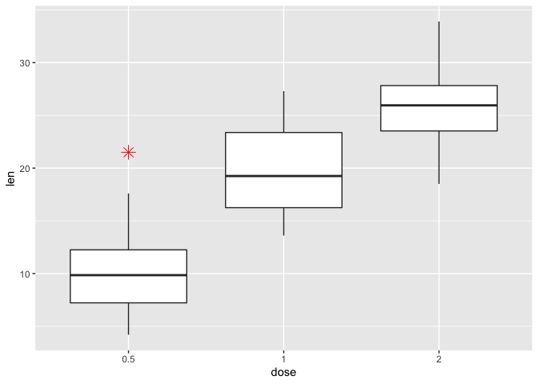
The function stat_summary() can be used to add mean points to a box
plot :
# Box plot with mean points
p + stat_summary(fun=mean, geom="point", shape=23, size=4)
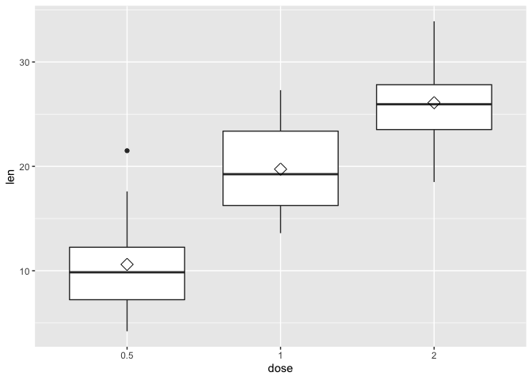
Choose which items to display :
p + scale_x_discrete(limits=c("0.5", "2"))
## Warning: Removed 20 rows containing missing values (stat_boxplot).
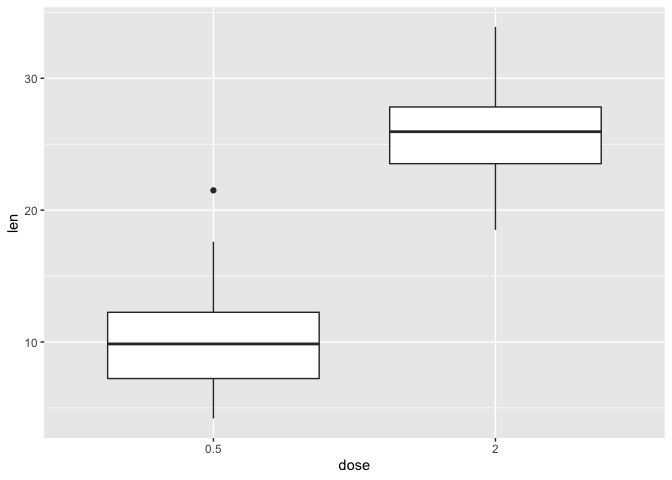
Box plot with dots
Dots (or points) can be added to a box plot using the functions
geom_dotplot() or geom_jitter() :
# Box plot with dot plot
p + geom_dotplot(binaxis='y', stackdir='center', dotsize=1)
## `stat_bindot()` using `bins = 30`. Pick better value with `binwidth`.
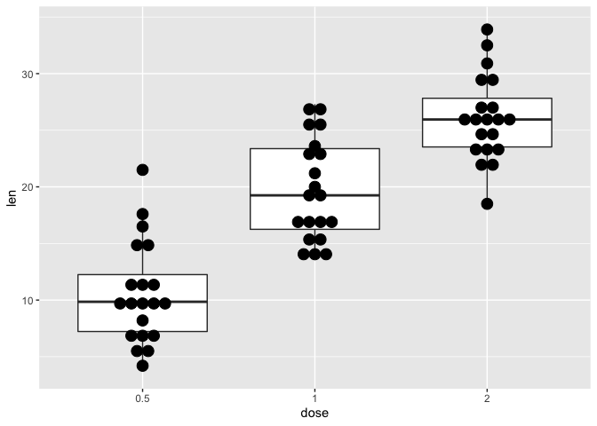
# Box plot with jittered points
# 0.2 : degree of jitter in x direction
p + geom_jitter(shape=16, position=position_jitter(0.2))
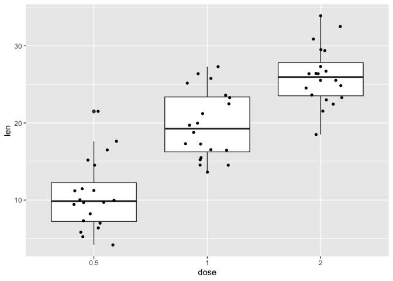
Change box plot colors by groups
Change box plot line colors
Box plot line colors can be automatically controlled by the levels of
the variable *dose() :
# Change box plot line colors by groups
p<-ggplot(ToothGrowth, aes(x=dose, y=len, color=dose)) +
geom_boxplot()
p
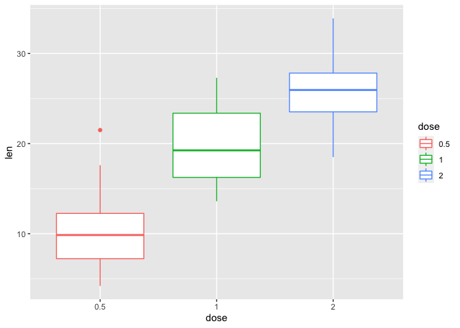
It is also possible to change manually box plot line colors using the
functions :
- scale_color_manual() : to use custom colors
- scale_color_brewer() : to use color palettes from
RColorBrewer package - scale_color_grey() : to use grey color palettes
# Use custom color palettes
p+scale_color_manual(values=c("#999999", "#E69F00", "#56B4E9"))
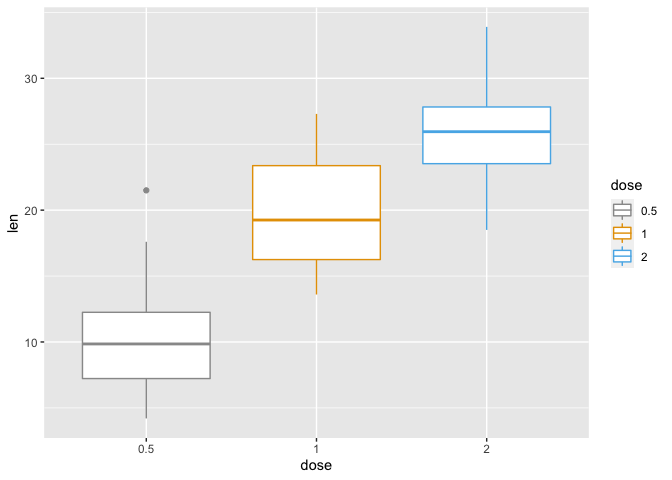
# Use brewer color palettes
p+scale_color_brewer(palette="Dark2")
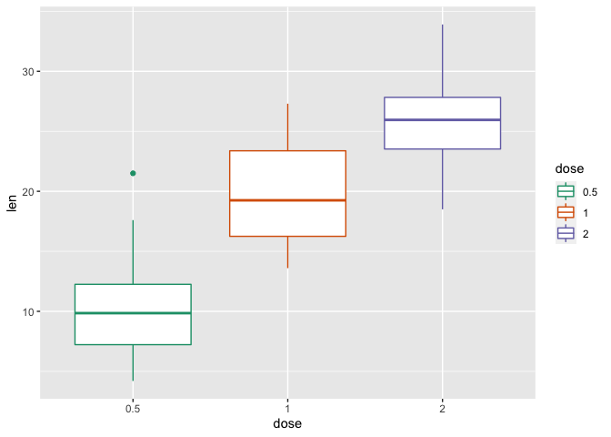
# Use grey scale
p + scale_color_grey() + theme_classic()
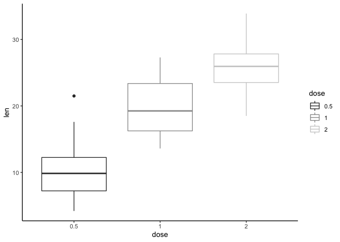
Read more on ggplot2 colors here : ggplot2
colors
Change box plot fill colors
In the R code below, box plot fill colors are automatically controlled
by the levels of dose :
# Use single color
ggplot(ToothGrowth, aes(x=dose, y=len)) +
geom_boxplot(fill='#A4A4A4', color="black")+
theme_classic()
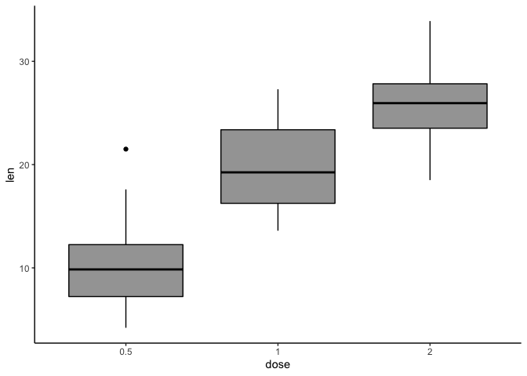
# Change box plot colors by groups
p<-ggplot(ToothGrowth, aes(x=dose, y=len, fill=dose)) +
geom_boxplot()
p
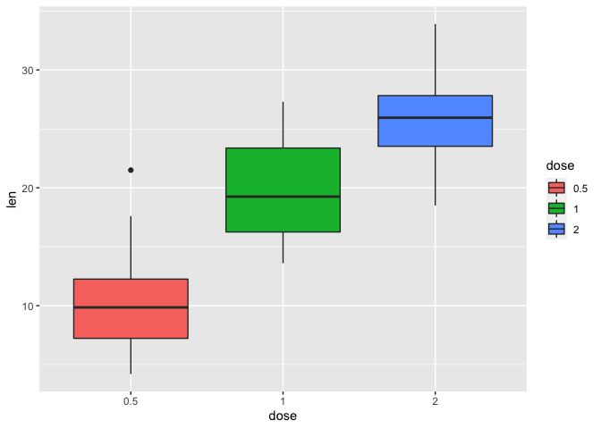
It is also possible to change manually box plot fill colors using the
functions :
- scale_fill_manual() : to use custom colors
- scale_fill_brewer() : to use color palettes from RColorBrewer
package - scale_fill_grey() : to use grey color palettes
# Use custom color palettes
p+scale_fill_manual(values=c("#999999", "#E69F00", "#56B4E9"))
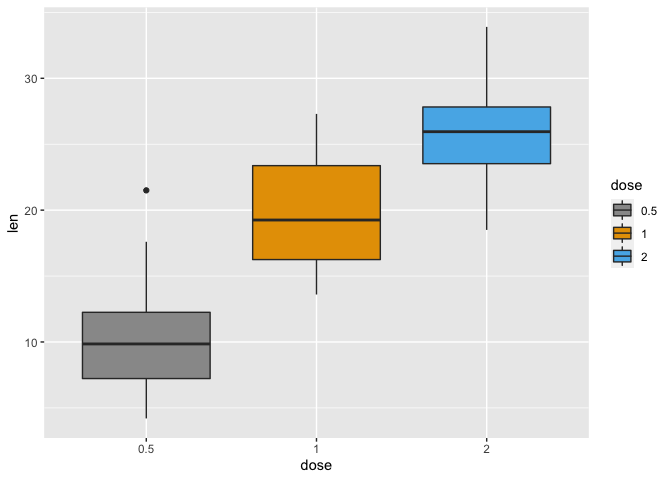
# use brewer color palettes
p+scale_fill_brewer(palette="Dark2")
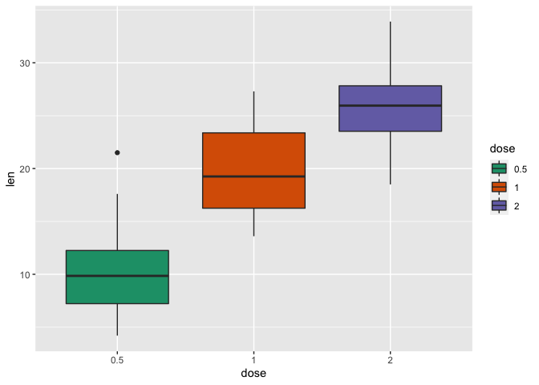
# Use grey scale
p + scale_fill_grey() + theme_classic()
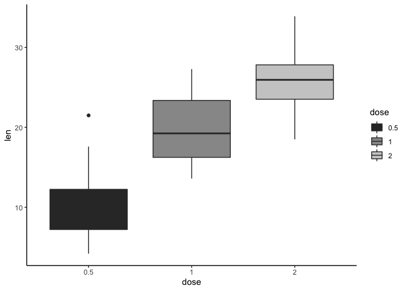
Read more on ggplot2 colors here : ggplot2
colors
Change the legend position
p + theme(legend.position="top")
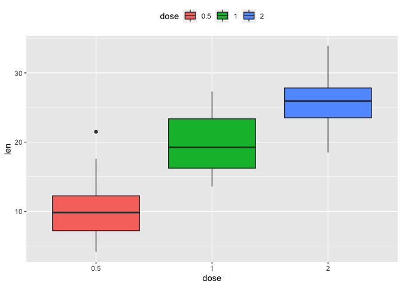
p + theme(legend.position="bottom")
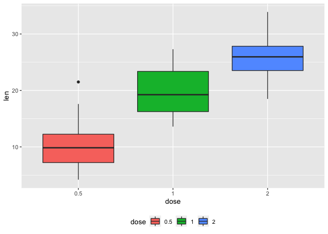
p + theme(legend.position="none") # Remove legend
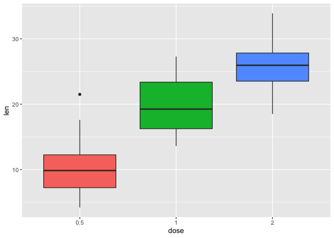
The allowed values for the arguments legend.position are :
“left”,“top”, “right”, “bottom”.
Read more on ggplot legend : ggplot2
legend
Change the order of items in the legend
The function scale_x_discrete can be used to change the order of
items to “2”, “0.5”, “1” :
p + scale_x_discrete(limits=c("2", "0.5", "1"))
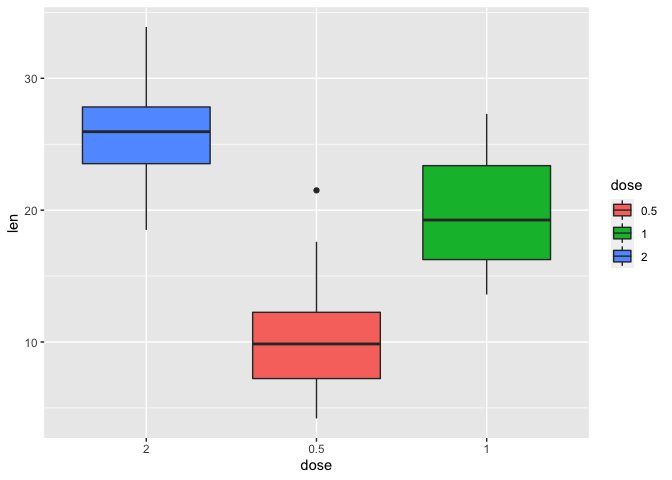
Box plot with multiple groups
# Change box plot colors by groups
ggplot(ToothGrowth, aes(x=dose, y=len, fill=supp)) +
geom_boxplot()
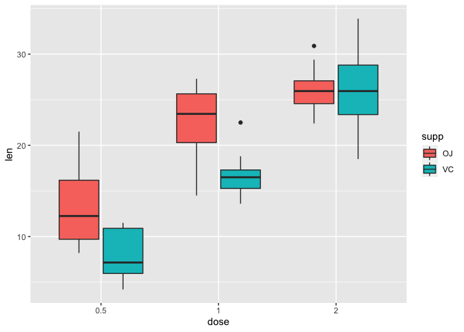
# Change the position
p<-ggplot(ToothGrowth, aes(x=dose, y=len, fill=supp)) +
geom_boxplot(position=position_dodge(1))
p
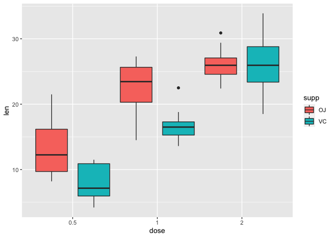
Change box plot colors and add dots :
# Add dots
p + geom_dotplot(binaxis='y', stackdir='center',
position=position_dodge(1))
## `stat_bindot()` using `bins = 30`. Pick better value with `binwidth`.
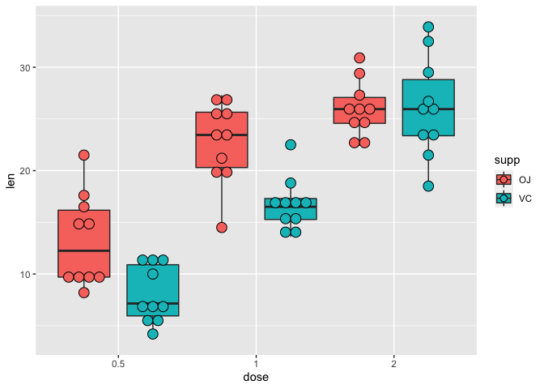
# Change colors
p+scale_fill_manual(values=c("#999999", "#E69F00", "#56B4E9"))
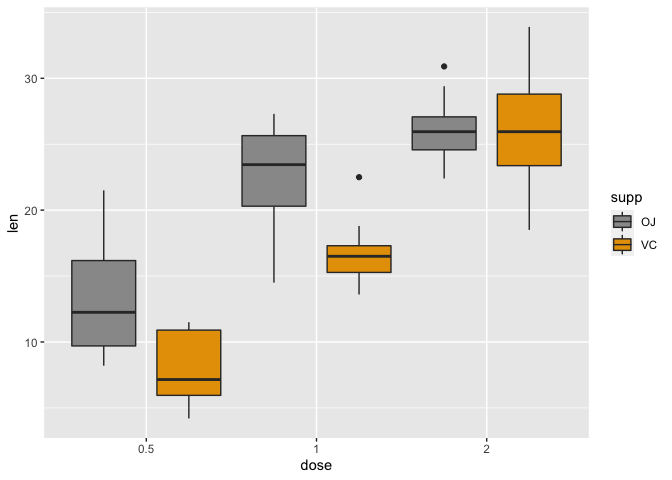
Customized box plots
# Basic box plot
ggplot(ToothGrowth, aes(x=dose, y=len)) +
geom_boxplot(fill="gray")+
labs(title="Plot of length per dose",x="Dose (mg)", y = "Length")+
theme_classic()
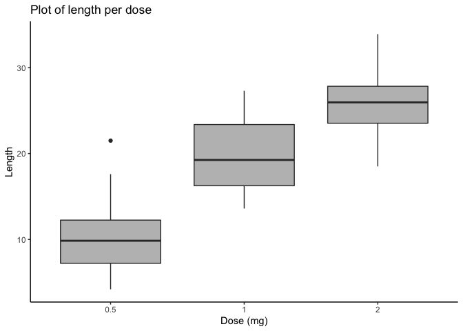
# Change automatically color by groups
bp <- ggplot(ToothGrowth, aes(x=dose, y=len, fill=dose)) +
geom_boxplot()+
labs(title="Plot of length per dose",x="Dose (mg)", y = "Length")
bp + theme_classic()
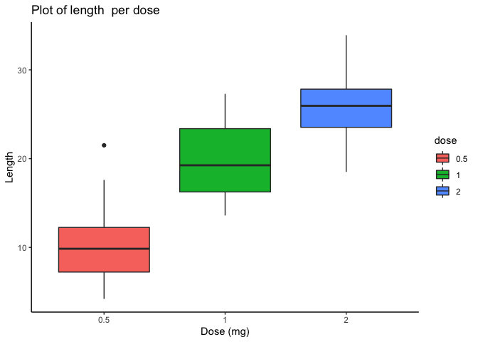
Change fill colors manually :
# Continuous colors
bp + scale_fill_brewer(palette="Blues") + theme_classic()
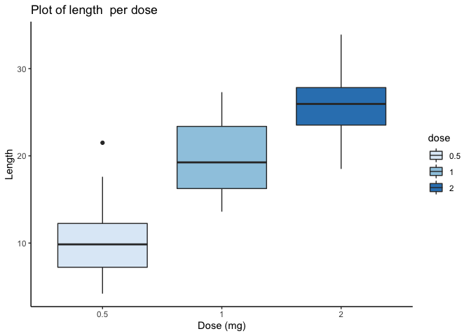
# Discrete colors
bp + scale_fill_brewer(palette="Dark2") + theme_minimal()
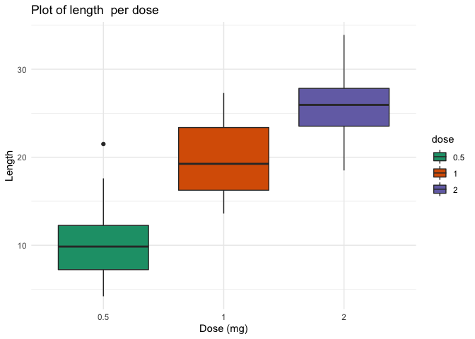
# Gradient colors
bp + scale_fill_brewer(palette="RdBu") + theme_minimal()
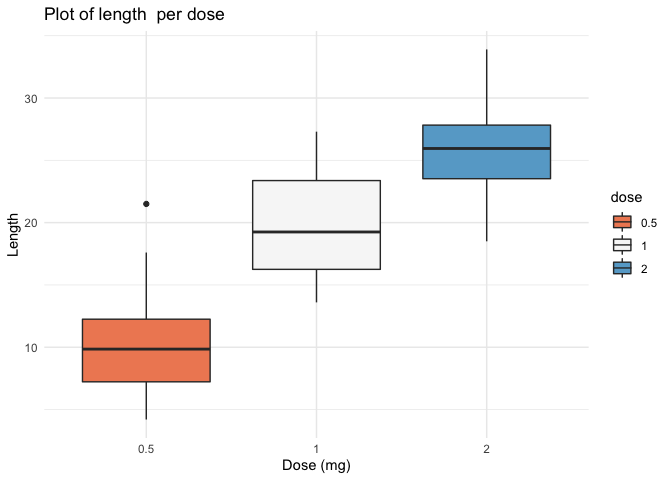
Read more on ggplot legend : ggplot2
colors
Infos
This analysis has been performed using R software (ver. 4.0.2) and
ggplot2 (ver. 3.3.2)